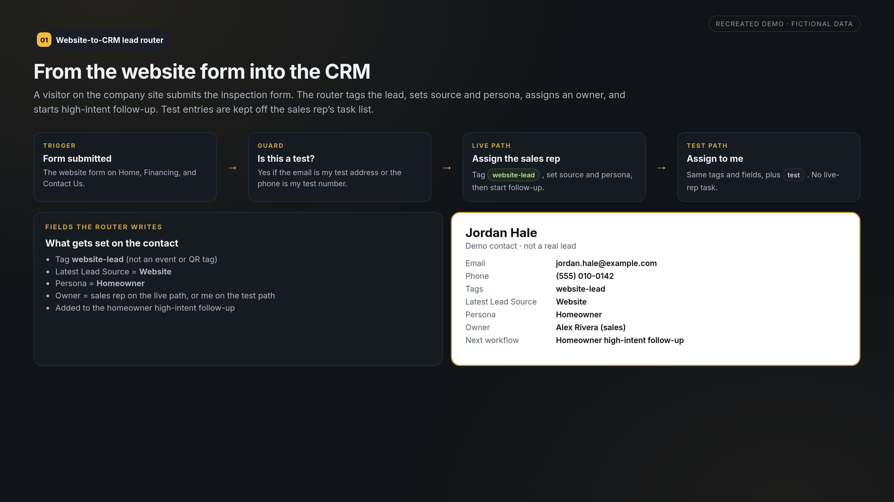
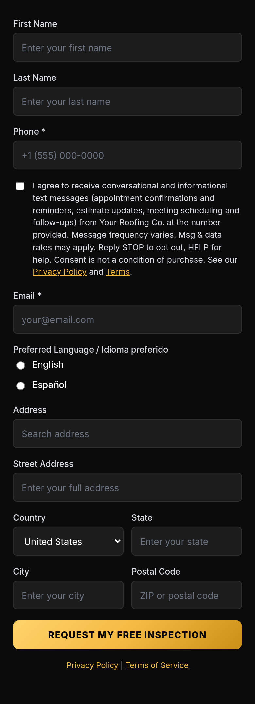

Home services
Website to CRM lead router
A Louisiana roofing and exteriors company had a new website form on Home, Financing, and Contact Us. Submissions needed to enter GoHighLevel as website leads, tagged correctly, given a source and persona, assigned to a sales rep, and put into follow up, without being mixed up with event or QR traffic, and without test entries landing on the rep's task list.
- Built a dedicated website form and a website lead router in GoHighLevel.
- The same form is embedded on Home, Financing, and Contact Us, with a consent checkbox and a preferred language choice.
- A form submitted trigger starts the router, and a test guard checks whether the email or phone is a test contact.
- On the live path, the contact is tagged as a website lead, source and persona are set, and the record is assigned to the sales rep.
- On the test path, a test tag is added and the contact is assigned to me so the sales rep is not notified.
Website visitors now come into the CRM as website homeowners, with an owner and a next follow up already in place. Test submits stay on my record, and website leads are no longer tagged or attributed as event or QR leads.
A Louisiana roofing and exteriors company had a new website form on Home, Financing, and Contact Us. Submissions needed to enter GoHighLevel as website leads, tagged correctly, given a source and persona, assigned to a sales rep, and put into follow up, without being mixed up with event or QR traffic, and without test entries landing on the rep's task list.
What I built
- Built a dedicated website form and a website lead router in GoHighLevel.
- The same form is embedded on Home, Financing, and Contact Us, with a consent checkbox and a preferred language choice.
- A form submitted trigger starts the router, and a test guard checks whether the email or phone is a test contact.
- On the live path, the contact is tagged as a website lead, source and persona are set, and the record is assigned to the sales rep.
- On the test path, a test tag is added and the contact is assigned to me so the sales rep is not notified.
How it works
- The same form is embedded on Home, Financing, and Contact Us, with a consent checkbox and a preferred language choice.
- A form submitted trigger starts the website lead router.
- An "Is this a test?" guard checks whether the email is my test address or the phone is my test number.
- On the live path, the contact is tagged as a website lead, Latest Lead Source is set to Website, Persona is set to Homeowner, and the record is assigned to the sales rep.
- On the test path, the same fields are written, a test tag is added, and the contact is assigned to me so the sales rep is not notified.
- Both paths add the contact to the homeowner high intent follow up, so the welcome and callback steps can run from one place.
Tools used. GoHighLevel forms and workflows, plus the form embed on the company WordPress site.
Website visitors now come into the CRM as website homeowners, with an owner and a next follow up already in place. Test submits stay on my record, and website leads are no longer tagged or attributed as event or QR leads.
Visuals on this card are recreated with sample data. They do not show the live client account.
